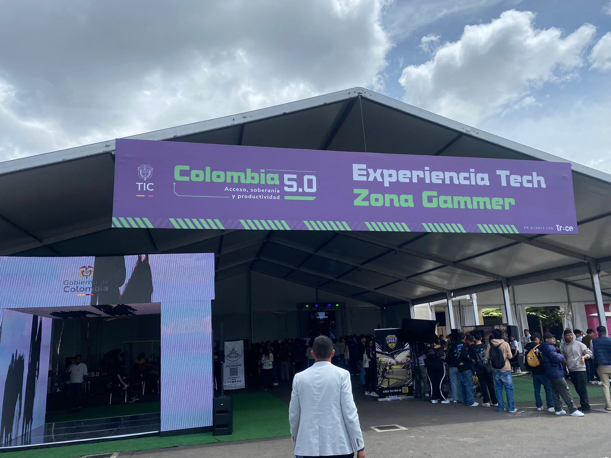
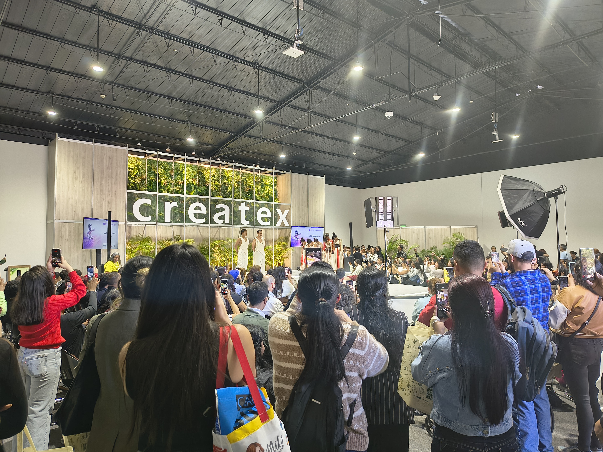
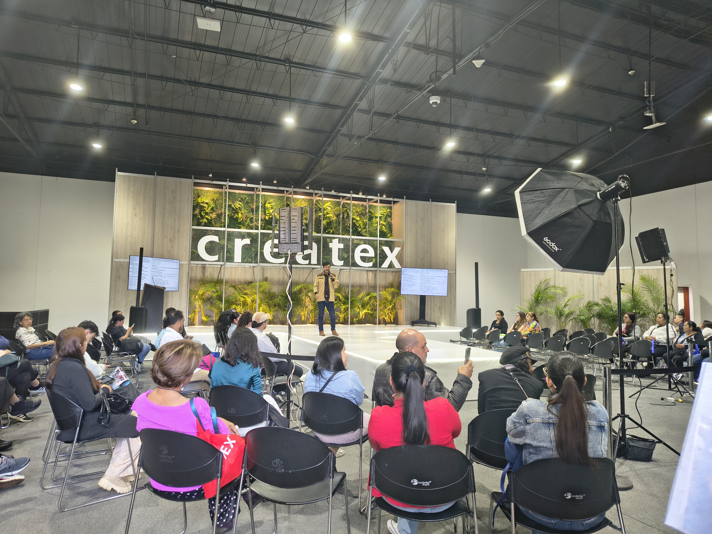
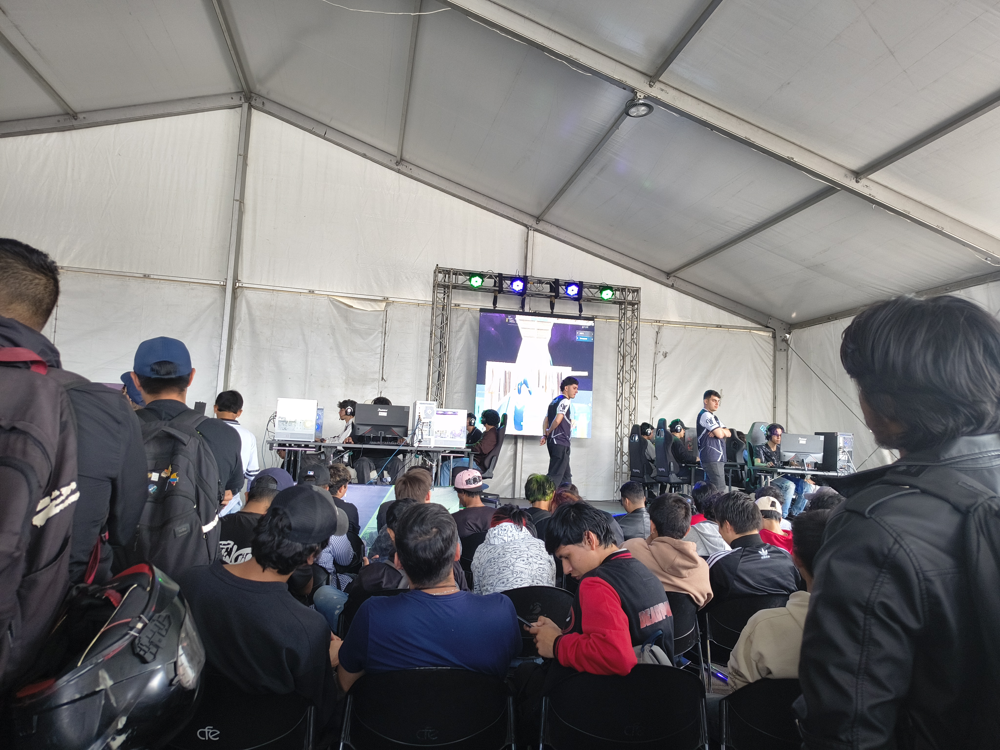
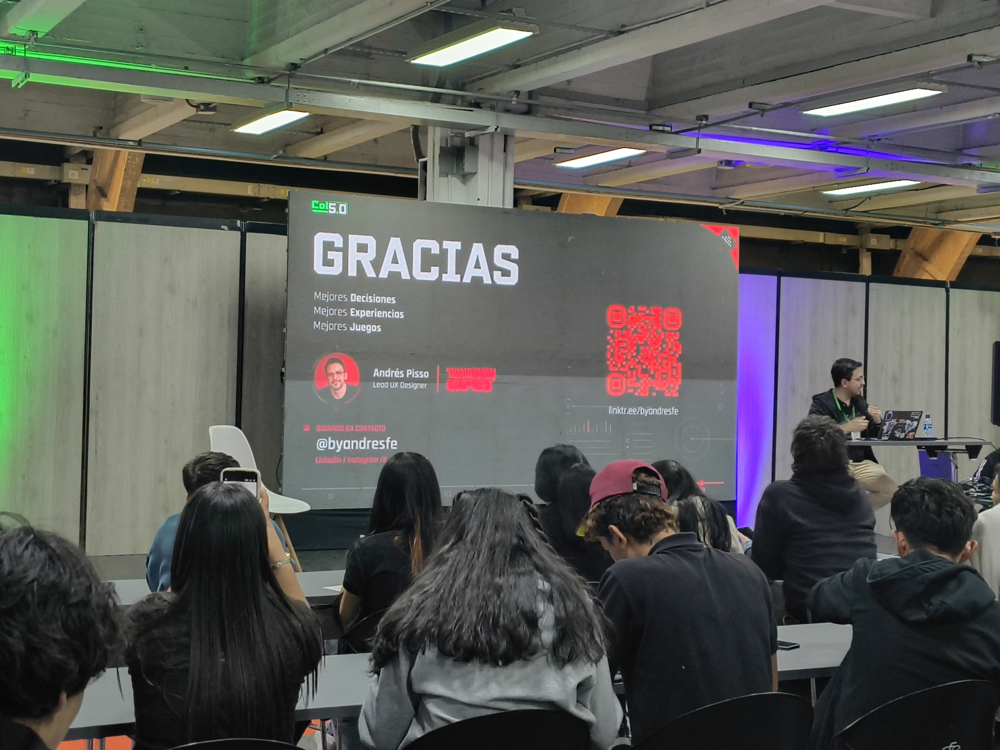
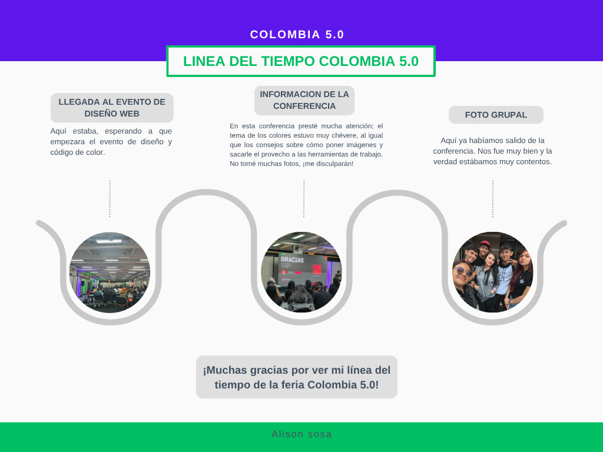
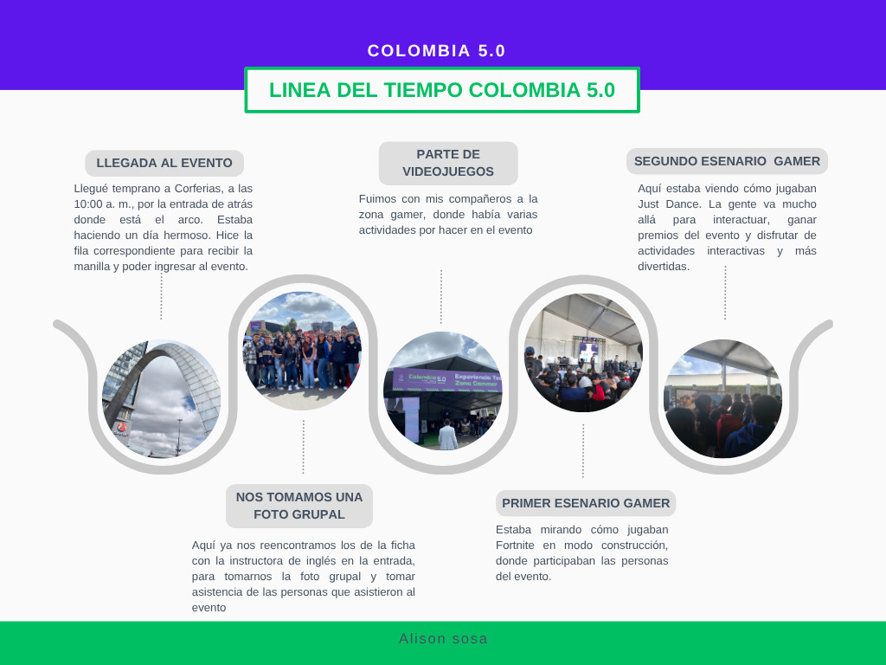
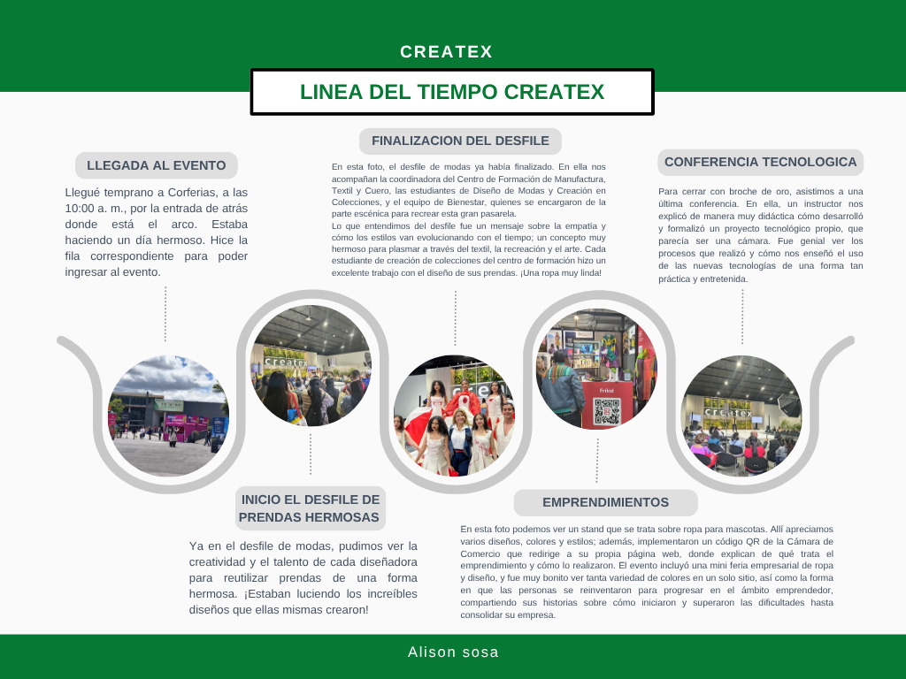
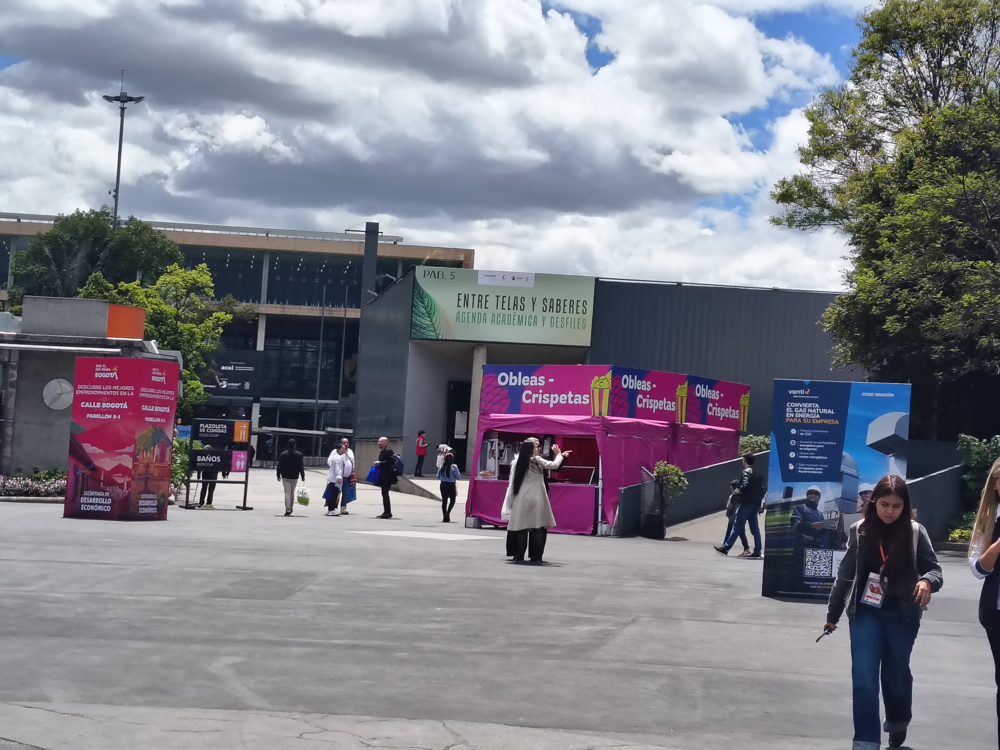
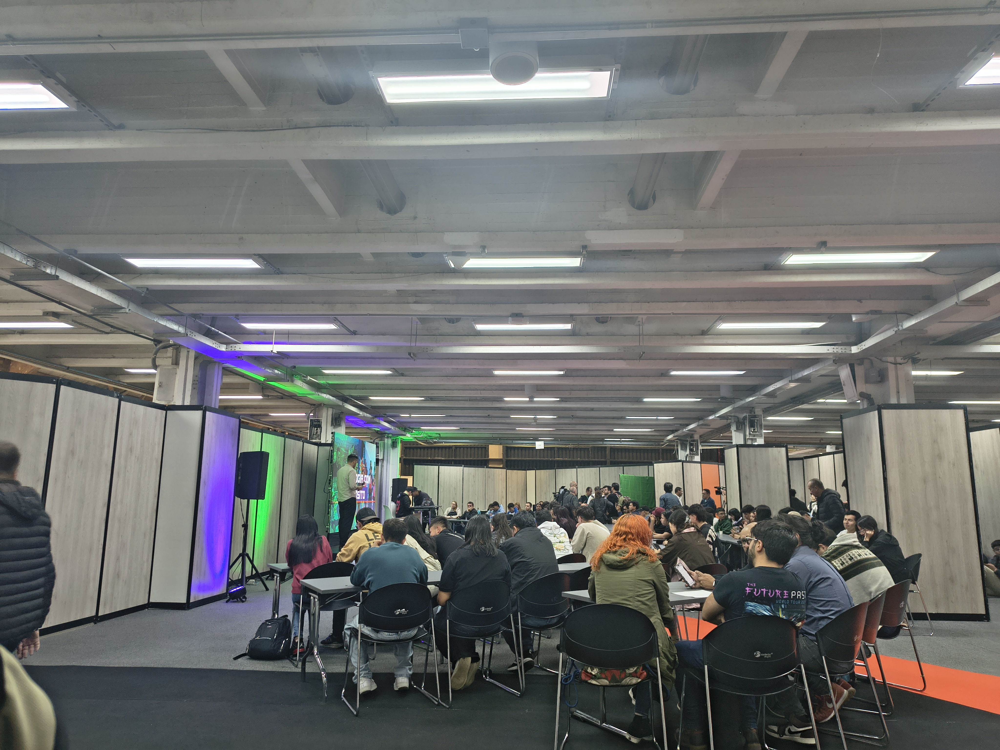

Bogotá · Mayo 2026
Tecnología, gaming y soberanía digital. El evento tech más importante del país reunido en Corferias.
Explorar →
Bogotá · Mayo 2026
Moda, textiles y creatividad colombiana. Desfiles, talleres y una agenda académica que inspira.
Explorar →Mi experiencia
En mayo de 2026 tuve la oportunidad de asistir a dos de los eventos académicos y creativos más importantes de Colombia: Colombia 5.0, la feria de tecnología e innovación digital del Ministerio de las TIC, y Createx, la feria de moda, textiles y diseño de Corferias.
Ambos eventos me mostraron algo que como estudiante de Análisis y Desarrollo de Software valoro profundamente: que la tecnología y la creatividad no son mundos separados — se potencian mutuamente y juntos definen la identidad cultural y digital de Colombia.



Evento 01 · Tecnología
Acceso, Soberanía y Productividad Digital
Organizado por el Ministerio de las TIC, Colombia 5.0 reunió a desarrolladores, gamers, emprendedores y estudiantes en torno a las tecnologías emergentes. La Zona Gammer, los hackathons y las conferencias académicas convirtieron el evento en un punto de encuentro entre la industria digital y la academia.

Andrés Pisso — Lead UX Designer
Andrés demostró que el UX design en imágenes, jerarquías y estructuras de diseño no es solo estética, sino una herramienta estratégica esencial para optimizar la usabilidad del producto digital.

Colombia 5.0 · Alianza Trece
Un espacio inmersivo donde cientos de estudiantes y gamers experimentaron en vivo torneos de Fortnite y LoL. La zona dejó claro que el gaming colombiano tiene talento, público y estructura para competir a nivel latinoamericano.
Evento 02 · Moda & Diseño
Entre Telas y Saberes — Agenda Académica y Desfiles
Createx es la feria de moda, textiles y diseño de Corferias Bogotá. Su propuesta académica "Entre Telas y Saberes" reunió a diseñadores, coloristas, artistas y educadores para reflexionar sobre el futuro de la industria creativa colombiana con énfasis en sostenibilidad y conocimiento.
Video · Createx 2026
Escenario principal Createx 2026 · Corferias Bogotá

Createx · Corferias Bogotá 2026
Los desfiles del escenario principal de Createx reunieron a cientos de personas en torno a colecciones que fusionan identidad colombiana, diseño sostenible y tendencias internacionales. Un recordatorio de que la moda es cultura materializada.
Registro fotográfico


Lo que me llevo
"Asistir a Colombia 5.0 y Createx me enseñó que tecnología y creatividad son el mismo idioma, escrito en distintos alfabetos."
Como estudiante de ADSO en el SENA, estos eventos confirmaron algo que intuía: el software que construimos impacta culturas, comunidades e industrias reales. El color que elige Sara Viloria para una colección tiene las mismas reglas semióticas que el color que yo elijo para un botón de confirmación en una app.
Andrés Pisso y la Zona Gammer me mostraron que el diseño de experiencias no es un proceso separado del desarrollo — es parte esencial de él. Y la conferencia de IA me recordó que el código que escribimos tiene consecuencias humanas reales.
El diseño centrado en el usuario transforma la industria: mejores decisiones = mejores experiencias.
El color no es decoración: es semiótica, historia y comunicación visual con reglas propias.
La IA generativa amplifica al desarrollador consciente. La responsabilidad ética no es opcional.
Createx mostró que innovar en textiles y en software comparte el mismo principio: menos desperdicio, más valor.
Estos dos eventos juntos demuestran que Colombia tiene la creatividad, el talento y la voluntad para definir su propia identidad digital y cultural. Ser parte de esa conversación es un privilegio.